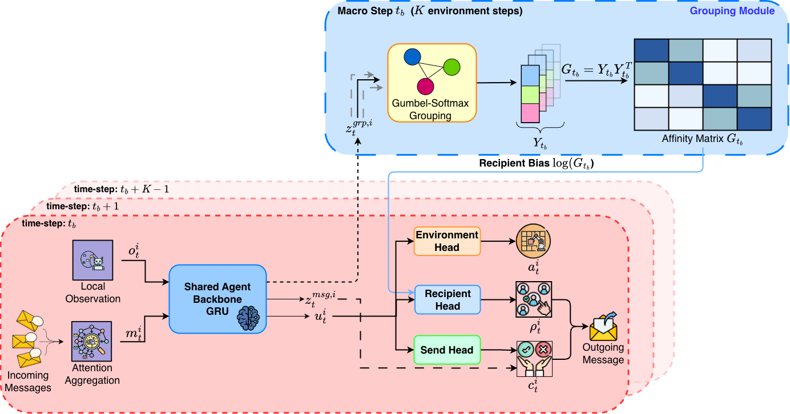
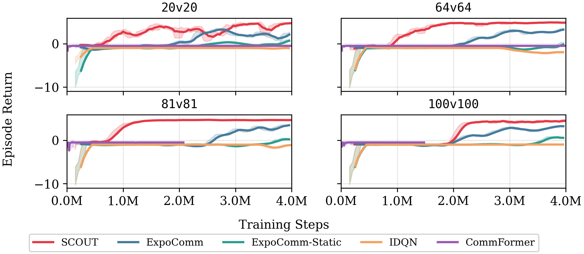
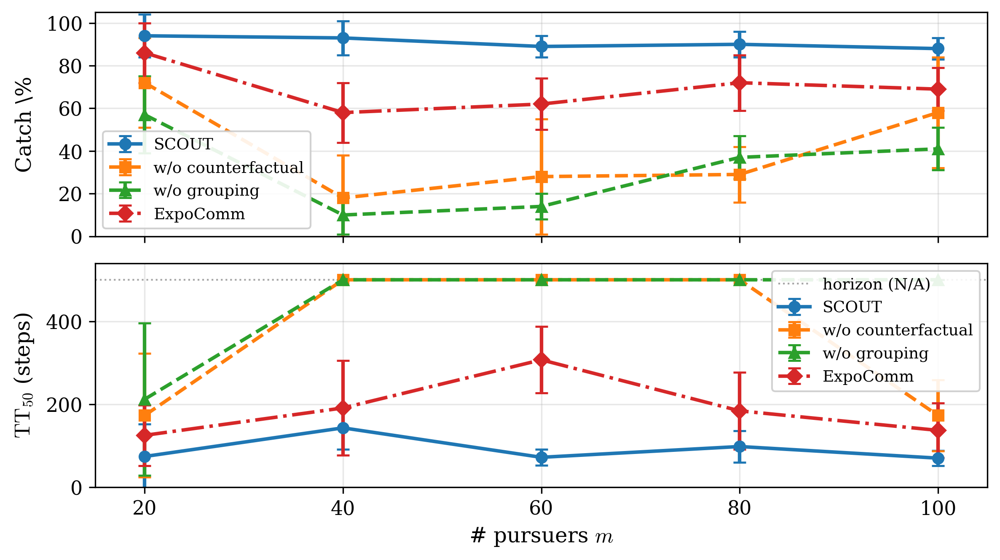
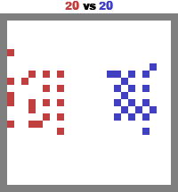
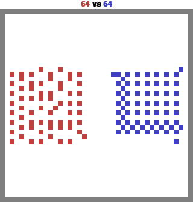
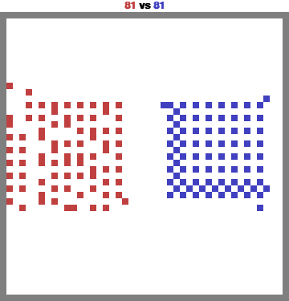
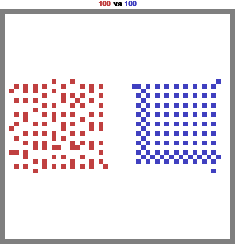

SCoUT: Scalable Communication via Utility-Guided Temporal Grouping in Multi-Agent Reinforcement Learning
Abstract
Communication can improve coordination in partially observed multi-agent reinforcement learning (MARL), but learning when and who to communicate with requires choosing among many possible sender-recipient pairs, and the effect of any single message on future reward is hard to isolate. We introduce SCoUT (Scalable Communication via Utility-guided Temporal grouping), which addresses both these challenges via temporal and agent abstraction within traditional MARL. During training, SCoUT resamples soft agent groups every K environment steps (macro-steps) via Gumbel-Softmax; these groups are latent clusters that induce an affinity used as a differentiable prior over recipients. Using the same assignments, a group-aware critic predicts values for each agent group and maps them to per-agent baselines through the same soft assignments, reducing critic complexity and variance. Each agent is trained with a three-headed policy: environment action, send decision, and recipient selection. To obtain precise communication learning signals, we derive counterfactual communication advantages by analytically removing each sender's contribution from the recipient's aggregated messages. This counterfactual computation enables precise credit assignment for both send and recipient-selection decisions. At execution time, all centralized training components are discarded and only the per-agent policy is run, preserving decentralized execution. Experiments on large-scale benchmarks show that SCoUT learns targeted communication and remains effective in large scenarios, while prior methods degrade as the population grows. Finally, ablations confirm that temporal grouping and counterfactual communication credit are both critical for scalability.
Methodology
SCoUT learns both whom to talk to (via a soft grouping policy over agent descriptors) and what to send (via a shared descriptor and message pool), using a centralized PPO with group-aware value baselines and counterfactual advantages for communication actions.

Results
SCoUT maintains high win rates and elimination rates across Battle scales and strong catch rates across Pursuit scales; ablations show that both temporal grouping and counterfactual communication credit are critical.

Battle: training curves across 20v20, 64v64, 81v81, 100v100.

Pursuit: catch rate and completion rate across scales.
MAgent Battle
Win rate, elimination rate, milestone reach rates R50/R75, and decisiveness via TT50/TT75 (20 evaluation seeds).
| Method | Win rate (%) | Elimination rate (%) | ||||||
|---|---|---|---|---|---|---|---|---|
| 20v20 | 64v64 | 81v81 | 100v100 | 20v20 | 64v64 | 81v81 | 100v100 | |
| SCoUT | 100.0±0.0 | 100.0±0.0 | 100.0±0.0 | 100.0±0.0 | 95±6 | 98±4 | 99±3 | 99±3 |
| ExpoComm | 0.0±0.0 | 95.0±4.9 | 96.0±4.2 | 96.4±2.7 | 11±16 | 94±12 | 72±16 | 75±21 |
| ExpoComm-Static | 0.0±0.0 | 0.0±0.0 | 60.0±11.0 | 65.0±10.7 | 3±8 | 1±2 | 57±30 | 36±10 |
| IDQN | 0.0±0.0 | 0.0±0.0 | 0.0±0.0 | 0.0±0.0 | 0 | 0 | 7±2 | 0 |
| Method | Milestone reach rate (%) R50 / R75 | TT50 / TT75 (steps; horizon=200) | ||||||
|---|---|---|---|---|---|---|---|---|
| 20v20 | 64v64 | 81v81 | 100v100 | 20v20 | 64v64 | 81v81 | 100v100 | |
| SCoUT | 100/100 | 100/100 | 100/100 | 100/100 | 24±1/30±1 | 24±2/29±1 | 27±3/32±2 | 31±4/39±2 |
| ExpoComm | 0/0 | 95/95 | 90/55 | 80/60 | N/A | 59±20/81±24 | 100±44/182±14 | 101±21/160±23 |
| ExpoComm-Static | 0/0 | 0/0 | 60/60 | 10/0 | N/A | N/A | 85±7/153±20 | N/A |
| IDQN | 0/0 | 0/0 | 0/0 | 0/0 | N/A | N/A | N/A | N/A |
Pursuit (PettingZoo SISL)
Catch%, Done%, and milestone times TT50/TT75 (20 evaluation seeds; horizon=500). For milestone rows, each entry is TTk (Rk), where Rk is the % of episodes reaching the k% capture milestone.
| Method | Catch rate (Catch%) | Completion rate (Done%) | ||||||||
|---|---|---|---|---|---|---|---|---|---|---|
| 20P-8E | 40P-16E | 60P-24E | 80P-32E | 100P-40E | 20P-8E | 40P-16E | 60P-24E | 80P-32E | 100P-40E | |
| SCoUT | 94±10 | 93±8 | 89±5 | 90±6 | 88±5 | 70 | 50 | 0 | 5 | 0 |
| w/o counterfactual | 72±21 | 18±20 | 28±27 | 29±13 | 58±26 | 20 | 0 | 0 | 0 | 0 |
| w/o grouping | 57±18 | 10±9 | 14±6 | 37±10 | 41±10 | 0 | 0 | 0 | 0 | 0 |
| ExpoComm (Peer-n=7) | 86±14 | 58±14 | 62±12 | 72±13 | 69±10 | 40 | 0 | 0 | 0 | 0 |
| Method | TT50 (steps; horizon=500) — R50% in parentheses | ||||
|---|---|---|---|---|---|
| 20P-8E | 40P-16E | 60P-24E | 80P-32E | 100P-40E | |
| SCoUT | 74±78 (100) | 143±52 (100) | 72±19 (100) | 98±38 (100) | 70±18 (100) |
| w/o counterfactual | 173±149 (90) | N/A (15) | N/A (20) | N/A (5) | 173±86 (55) |
| w/o grouping | 212±184 (80) | N/A (0) | N/A (0) | N/A (15) | N/A (20) |
| ExpoComm (Peer-n=7) | 125±73 (100) | 191±114 (80) | 307±80 (85) | 184±93 (100) | 137±66 (95) |
| Method | TT75 (steps; horizon=500) — R75% in parentheses | ||||
|---|---|---|---|---|---|
| 20P-8E | 40P-16E | 60P-24E | 80P-32E | 100P-40E | |
| SCoUT | 138±82 (95) | 227±65 (95) | 139±64 (100) | 212±79 (100) | 149±41 (100) |
| w/o counterfactual | 214±136 (65) | N/A (0) | N/A (15) | N/A (0) | N/A (35) |
| w/o grouping | N/A (30) | N/A (0) | N/A (0) | N/A (0) | N/A (0) |
| ExpoComm (Peer-n=7) | 234±114 (80) | N/A (15) | N/A (20) | N/A (40) | 425±59 (50) |
SCoUT in action
Trajectories from trained SCoUT policies (env render only) across scales.
MAgent Battle




PettingZoo Pursuit


BibTeX
To be added upon publication.